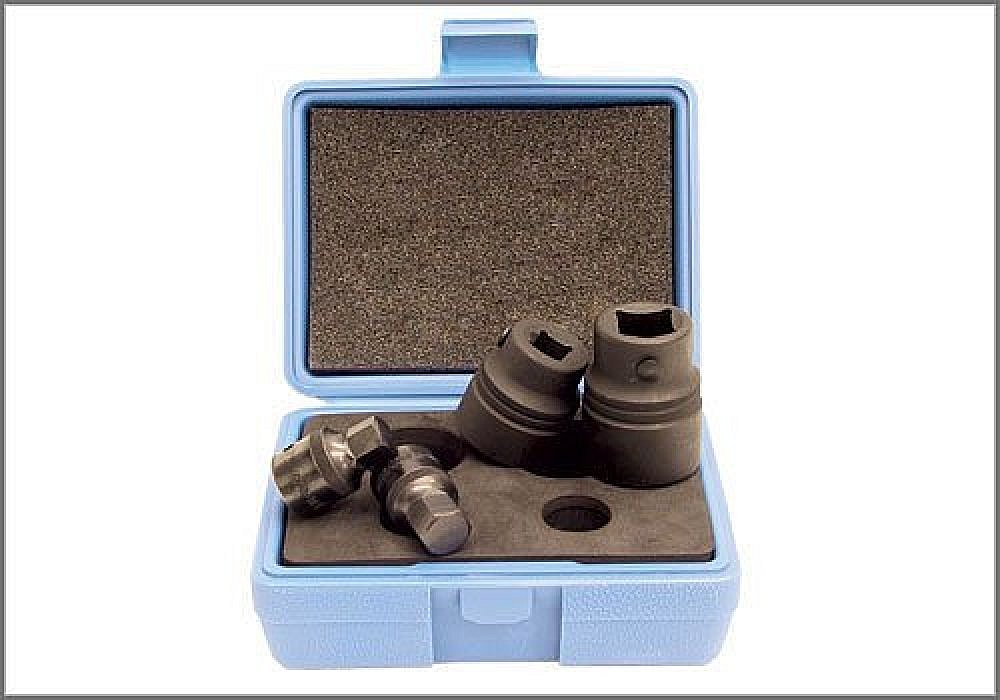
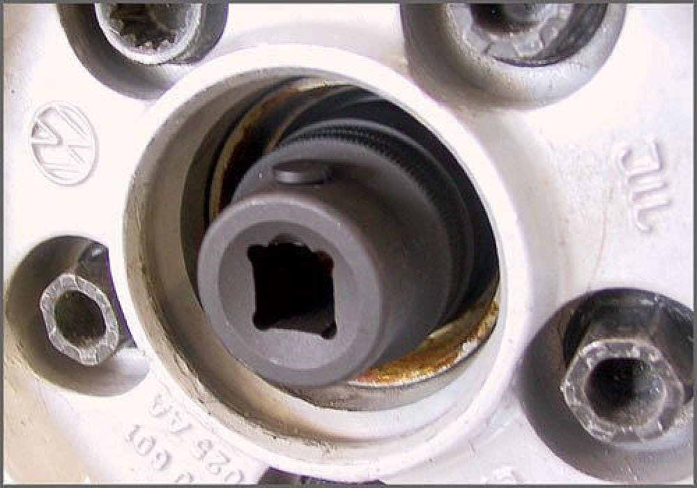
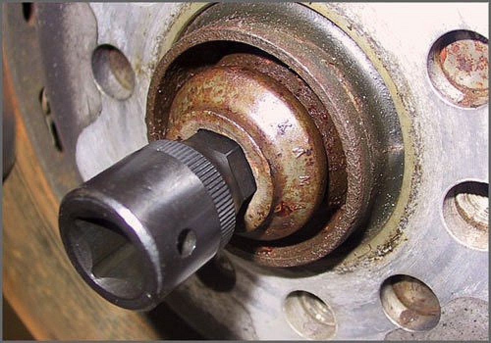
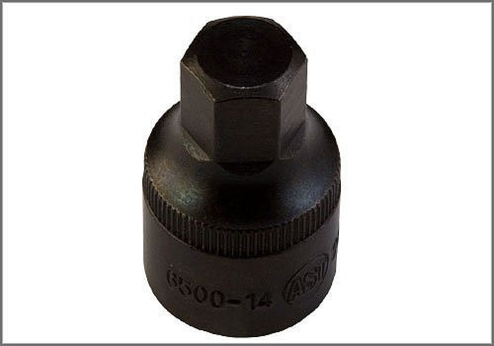
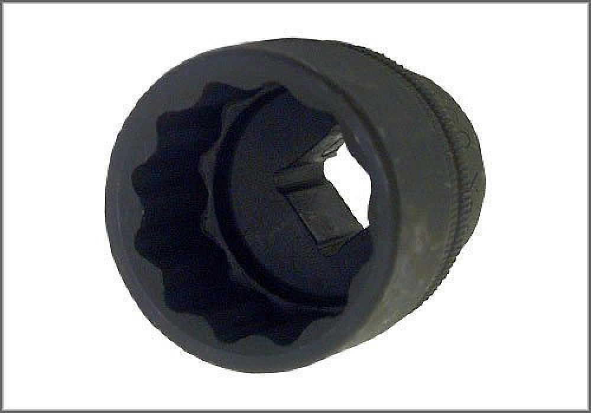

Axle Nut: Tools and Equipment
VW/Audi Axle Nut Set
AST tool# 6500



VW/Audi axle nut set. Contains:6500-14, 6500-17, 6500 X-30, and 6500 X-32.
- 14mm allen for VW Passat 1996-2001, Audi A4; front and rear axle bolts (AWD)
- 17mm allen for 1998-2005 VW Passat, 1999-2004 Audi A6, 2002-2005 Audi A4; front and rear axle bolts (AWD)
- 30mm 12 point socket for mid 1999-2005 VW Golf, Jetta, Cabrio, and Beetle; front axle nut
- 32mm 12 point socket with a 3/4" drive, VW Touareg; front and rear axle nuts
Contact AST for pricing.
Assenmacher Specialty Tools
1-800-525-2943
This Kit Contains the Following Tools:

6500-14 - 14mm Allen Socket

6500-17 - 17mm Allen Socket

6500 X-30 - 30mm, 12-Pt. Socket

6500 X-32 - 32mm, 12-Pt. Socket